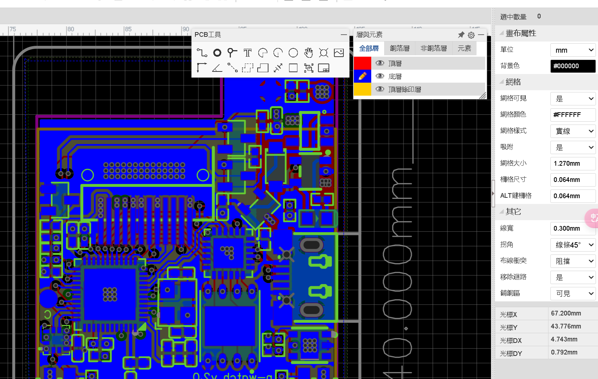

探索模型上下文協議的前沿應用與實際案例示範
在這個互動展示區，我們將通過兩個實際案例，直觀展示MCP（模型上下文協議）如何在不同場景中發揮作用。第一個案例展示MCP在數據分析場景中的應用，第二個案例則介紹「霹靂車的AI語音助理」，探討它與MCP架構的關聯。
MCP（模型上下文協議）是一種用於AI系統間溝通的標準化框架，它允許不同的AI模型和組件在共享上下文的基礎上進行有效協作。MCP使AI系統能夠保持思考過程的透明度，實現更一致、可靠的多步驟推理。
首先，讓我們探索MCP如何在銷售數據分析場景中發揮作用。這個案例展示了MCP如何處理Excel數據，執行多步推理，並產生有見解的分析報告。
| 日期 | 產品 | 區域 | 銷售額 | 客戶 |
|---|---|---|---|---|
| 2025/01/05 | 智能家居套件 | 北區 | 28,500 | 科技新貴 |
| 2025/01/12 | 智能家居套件 | 南區 | 35,200 | 豪宅社區 |
| 2025/01/18 | AI健康監測器 | 中區 | 42,800 | 醫療中心 |
| 2025/01/25 | 智能家居套件 | 北區 | 30,100 | 科技新貴 |
| 2025/02/02 | AI健康監測器 | 南區 | 38,600 | 銀髮族社區 |
| 2025/02/10 | 智能家居套件 | 中區 | 27,300 | 年輕家庭 |
| 2025/02/18 | VR學習系統 | 北區 | 58,900 | 教育機構 |
| 2025/02/24 | VR學習系統 | 南區 | 6,700 | 家庭用戶 |
{
"context": {
"task": "sales_analysis",
"data_source": "excel_file",
"schema": {
"inferred": true,
"fields": ["date", "product", "region", "sales", "customer"]
}
},
"thinking": {
"data_patterns": ["產品種類有限", "區域分佈集中", "銷售額波動較大"],
"anomalies": ["VR學習系統在南區表現異常低"]
}
}
{
"context": { /* 包含前階段的上下文 */ },
"thinking": {
"regional_analysis": {
"north": { "total_sales": 117500, "products": ["智能家居套件", "VR學習系統"] },
"central": { "total_sales": 70100, "products": ["智能家居套件", "AI健康監測器"] },
"south": { "total_sales": 80500, "products": ["智能家居套件", "AI健康監測器", "VR學習系統"] }
},
"product_performance": {
"smart_home": { "total_sales": 121100, "trend": "stable" },
"health_monitor": { "total_sales": 81400, "trend": "growing" },
"vr_learning": { "total_sales": 65600, "trend": "volatile" }
}
}
}
{
"context": { /* 包含前階段的上下文 */ },
"thinking": { /* 包含前階段的思考過程 */ },
"results": {
"key_insights": [
"智能家居套件在所有區域表現穩定，是主力產品",
"VR學習系統在南區表現異常，銷售額明顯偏低",
"北區總體銷售表現最佳，應考慮加大投入"
],
"recommendations": [
"調查南區VR學習系統銷售異常原因",
"擴大北區智能家居套件的市場推廣",
"針對教育機構開發VR學習系統的增強功能"
]
}
}
通過MCP框架，數據分析流程變得更加透明和高效。整個過程中，AI不僅完成了數據處理，還展示了推理路徑、考慮因素和決策依據。這種透明度使結果更加可靠，也使人類用戶能夠更好地理解和信任AI的分析結果。
接下來我們回過頭來藉助現今AI技術的進步，讓我們稍微感受霹靂車的AI語音助理，並了解如何將大型語言模型應用於實際的硬體設備中，以及它與MCP架構的關聯。
霹靂車AI語音助理採用了模組化設計，透過微控制器連接各種感測器和輸出設備，並通過API與雲端大型語言模型（如GPT-4）交互，實現本地與雲端結合的智能應用。

{
"context": {
"device": "xiaozhi_esp32",
"input_mode": "voice",
"user_query": "明天台北的天氣怎麼樣？"
},
"thinking": {
"intent_recognition": {
"type": "weather_query",
"location": "taipei",
"time": "tomorrow"
},
"required_data": ["weather_api", "location_data"]
}
}
{
"context": { /* 包含前階段的上下文 */ },
"thinking": {
"api_module": {
"service": "weather_api",
"parameters": {
"location": "taipei",
"date": "2025-04-30"
},
"response": {
"temperature": "24-28°C",
"condition": "partly_cloudy",
"precipitation": "30%"
}
},
"reasoning_module": {
"interpretation": "明天台北天氣溫暖，部分時間有雲，有小雨機率"
}
}
}
{
"context": { /* 包含前階段的上下文 */ },
"thinking": { /* 包含前階段的思考過程 */ },
"response": {
"text": "明天台北的天氣將會是攝氏24到28度，部分時間有雲，有30%的降雨機率。建議攜帶輕便雨具以防萬一。",
"voice_parameters": {
"speed": 1.0,
"pitch": 1.0,
"emphasis": ["雨具", "以防萬一"]
},
"device_actions": {
"display": {
"show_weather_icon": "partly_cloudy",
"show_temperature": "24-28°C"
}
}
}
}
透過MCP框架，霹靂車AI語音助理實現了模組化設計與透明的思考過程，具有以下優勢：
MCP作為一種新興的AI系統溝通標準，正在開拓全新的應用可能性。在未來，我們期待看到MCP在以下領域發揮更大作用：
MCP可以成為多個AI智能代理協作的基礎，使它們能夠分工合作、共享上下文，並協調行動，實現單一AI無法完成的複雜任務。
透過MCP的透明推理過程，人類可以更好地理解AI的決策過程，在關鍵環節提供指導或修正，實現人機協作的最佳效果。
MCP的結構化上下文和思考過程記錄，為AI系統行為提供了可追溯的解釋路徑，提升了AI決策的透明度和可信度。